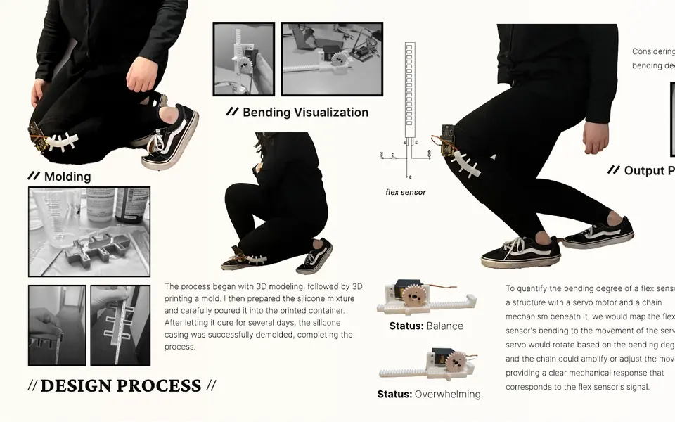
FlexiKnee Pro
A knee brace for construction workers. I built a flex-sensor prototype, logged readings across simulated postures, and mapped bend levels to LED feedback.
Open to data, BI and business analyst roles · available May 2027
I'm Yinuo (Dorine) Liu. I studied industrial design at Pratt, then switched to data. I'm now in the Big Data Analytics track of the Master of Science in Information program at the University of Michigan, graduating May 2027. This summer I interned at a consulting firm that works with pharmaceutical companies, where I built a SQL database and Tableau dashboards for a client. In school, most of my work is Python and SQL on public data, like NYC 311 complaints, Michigan campaign donations and video game sales.
Course, competition and client projects from UMSI. Each one has a page with the question, the data, what I did and what came out of it.
Between October 2025 and May 2026, New Yorkers filed about 342,000 heat and hot-water complaints through 311. I joined them with weather and Census data to see when, where and in which buildings people went without heat.
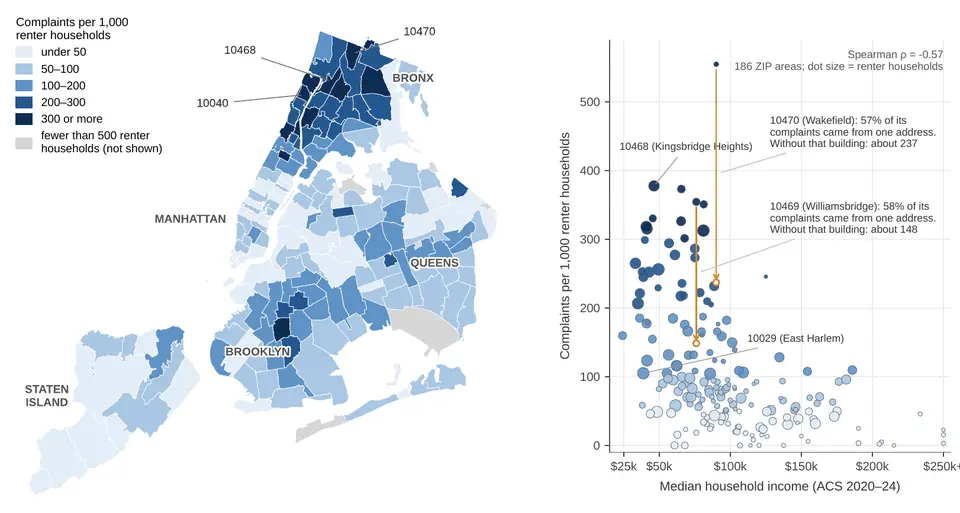
A one-day hackathon on Michigan campaign-finance records. We looked at who gives, how much and when, and wrote a rule to catch “donation dump” days, when a campaign suddenly got far more donations than usual.
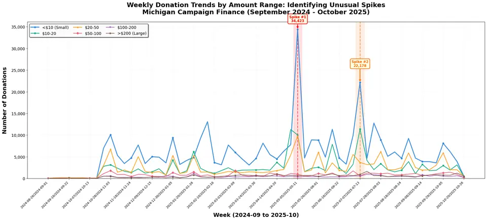
U-M's employee wellness program wanted to know why frontline staff weren't using its digital resources. The project started as a digital-skills question. Interviews pointed somewhere else: email-based communication and a login process that doesn't fit jobs away from a desk.
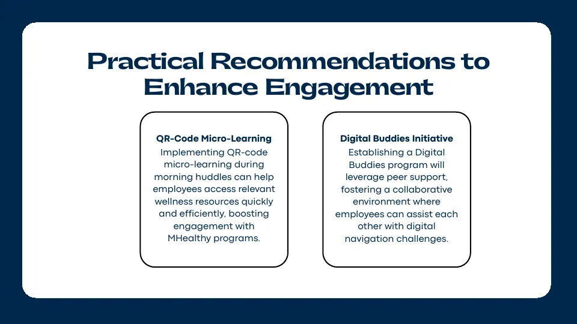
I took a flat Kaggle file of game sales and review scores, split it into seven related MySQL tables, and used SQL to answer six market questions, such as which publishers sell well in every region.
Internships. Client names are left out.
May–Aug 2026
Data Analytics & Business Consulting Intern
Spent a week on-site turning a client's paper records into a multi-table SQL database with Tableau dashboards on top, wrote a Python script that merged 70+ messy client files into one dataset, and supported compliance consulting for pharmaceutical clients.
May–Aug 2023
Project Assistant
Researched the charging habits of 200+ EV users across four providers, helped collect customer-journey data from 150+ visitors at an automaker's experience store, and benchmarked five industrial equipment manufacturers in Excel.
May–Aug 2021
Product & Research Intern
Tested a head-worn EEG device as a pilot user, found that small shifts in fit degraded the signal, and helped redesign the strap. Also worked on a recycling device and helped the CEO host healthcare clients.
Industrial design projects from Pratt, 2021–2025. They're concepts and prototypes, not shipped products. I keep them here for the research and prototyping behind them.

A knee brace for construction workers. I built a flex-sensor prototype, logged readings across simulated postures, and mapped bend levels to LED feedback.
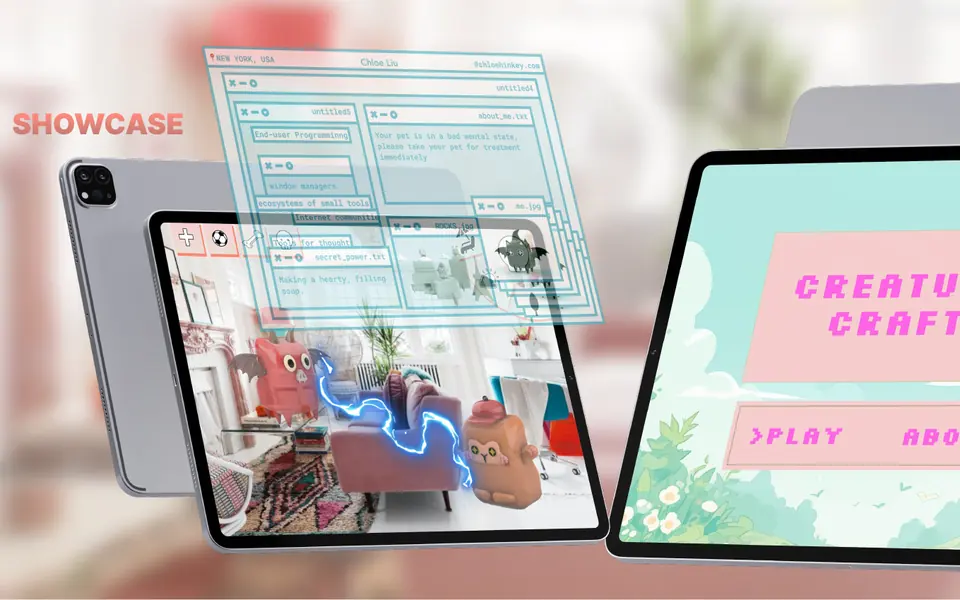
A modular companion toy with an iPad AR side. I interviewed potential users, then built three hand-gesture triggers in Unity with Leap Motion.
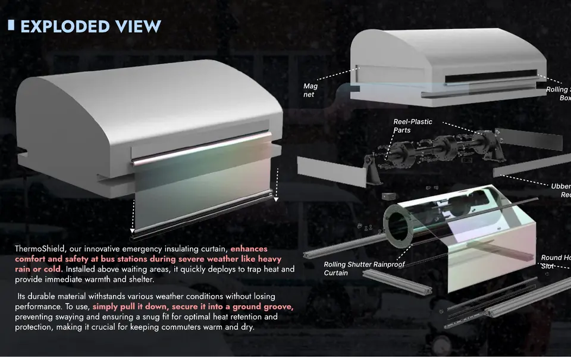
A pull-down insulating curtain for bus stops in extreme cold, worked out through a stakeholder map, a material comparison and 3D-printed feasibility models.
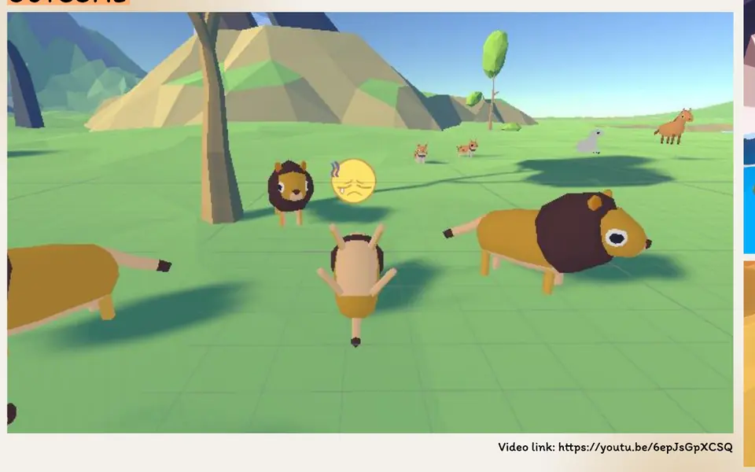
A low-pressure wildlife-rescue game with a rhythm mini-game players can switch to at any time. I designed the flow, characters and UI and built a working prototype.
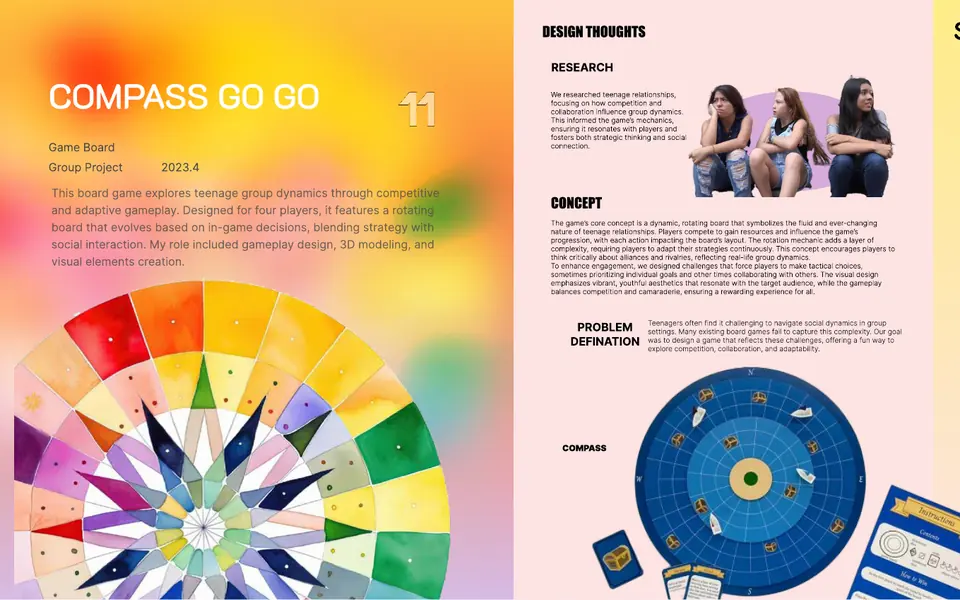
Board game with a rotating board, about teen cooperation and competition.
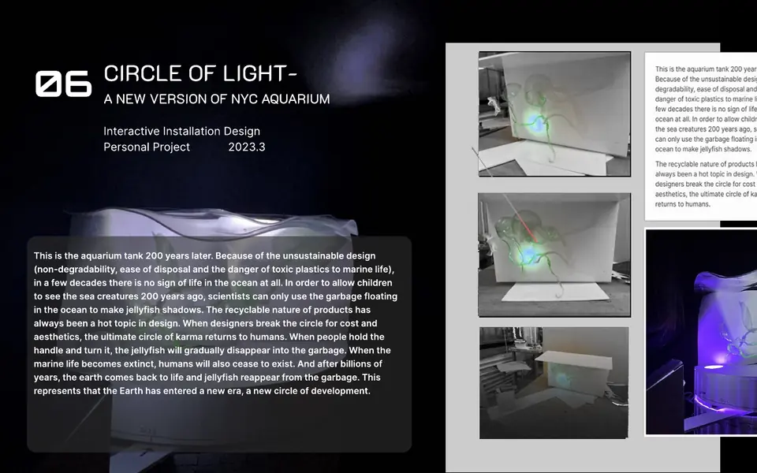
Interactive light installation for a future New York Aquarium.
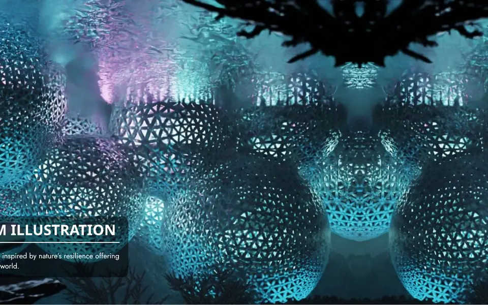
Underground habitat system modeled on ant nests.
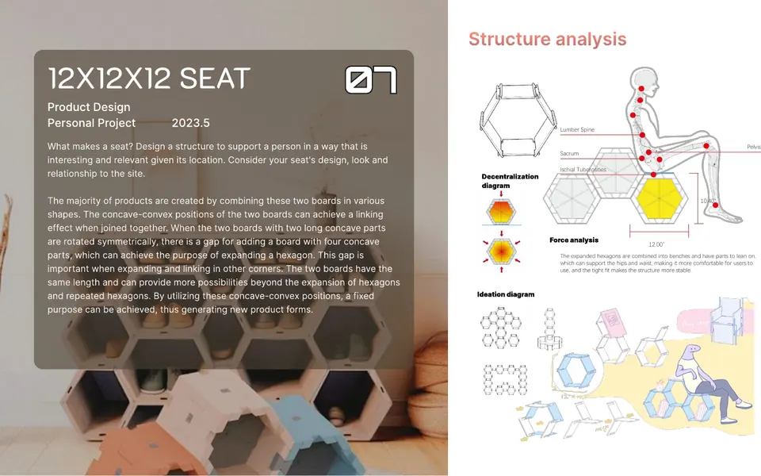
Modular seating units designed within a fixed size limit.
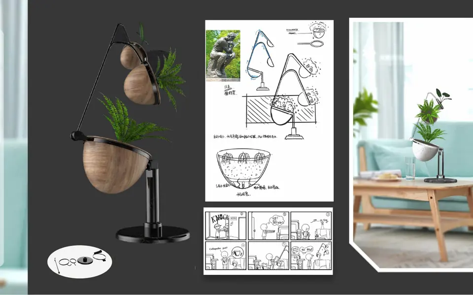
Foldable planter for small spaces.
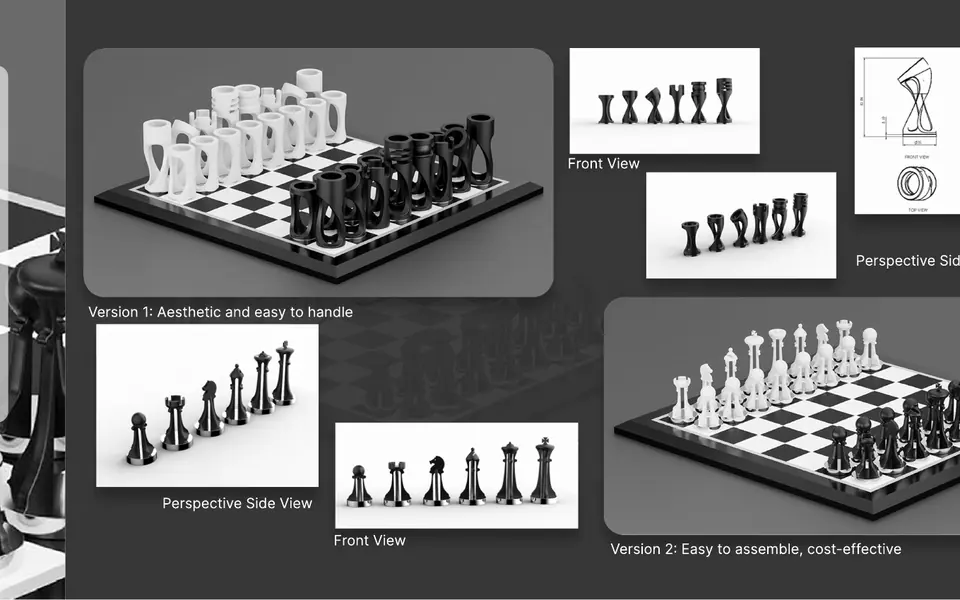
Two chess sets: one for looks and grip, one for easy assembly.
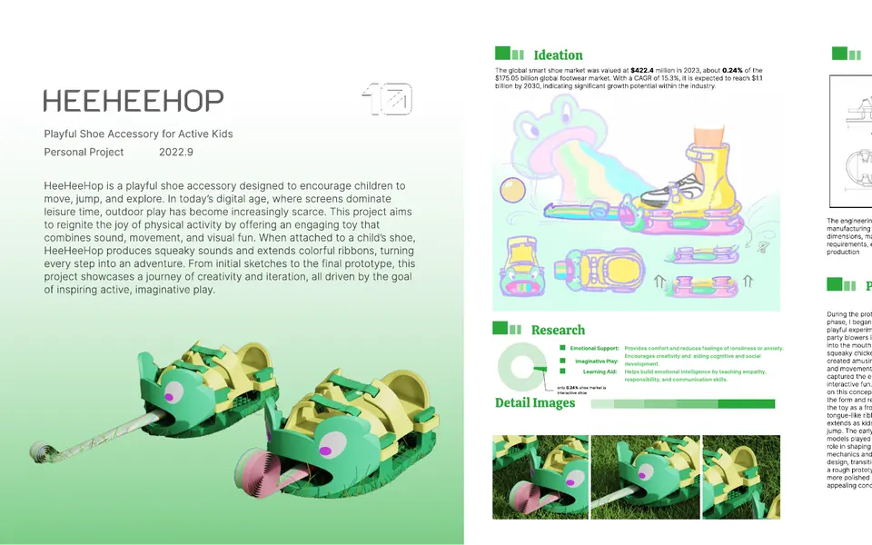
Shoe accessory that reacts when kids run and jump.